When?
After three months of frequent use.
Internal Cleaning
Remove the back panel by loosening the below-indicated screws
Use a vacuum, compressed air, or a cloth to remove dust, debris, and any accumulated material.
Check and clean all fittings, fans, components, and wirings.
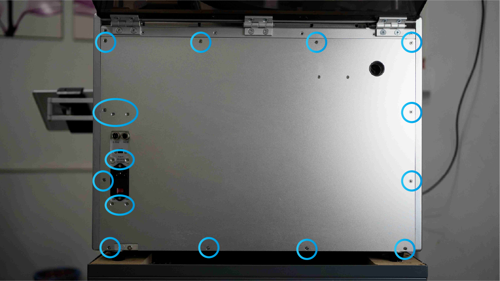
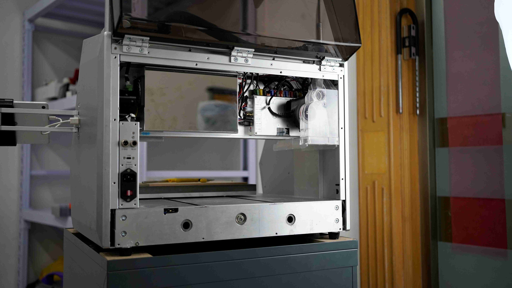
Control board
- You have to remove the Dust chamber before you can access the full control board.
- Loosen the 4 screws to take off the Control board cover.
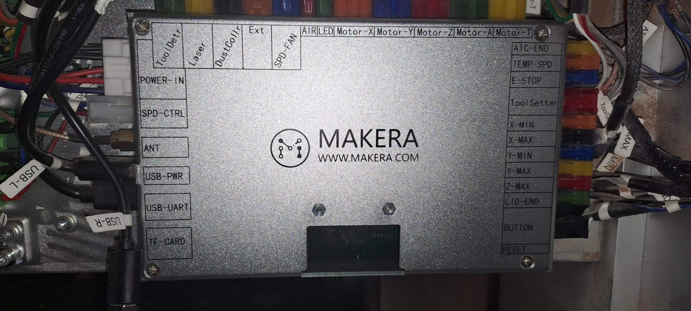
- Clean and check all connectors,
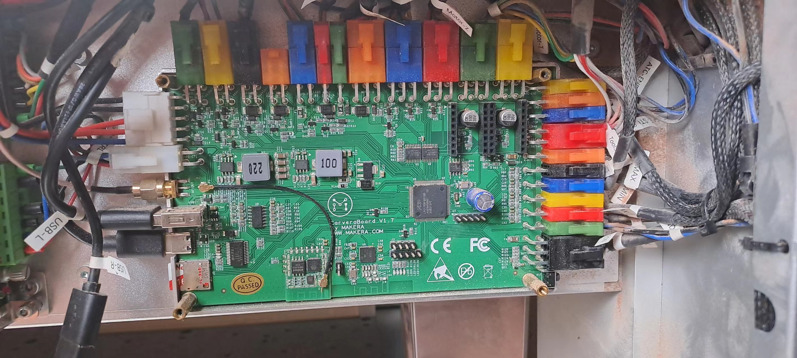
- Please note that the ATC and A-axis motor driver is stuck to the inside of the cover with a thermal silicone pad, please ensure it stays this way and be careful not to bend the pins when putting back the cover.
- Mount the cover back in position by reversing step 1.
Power supply unit
- Loosen these 2 screws and slide the cover to the left to remove
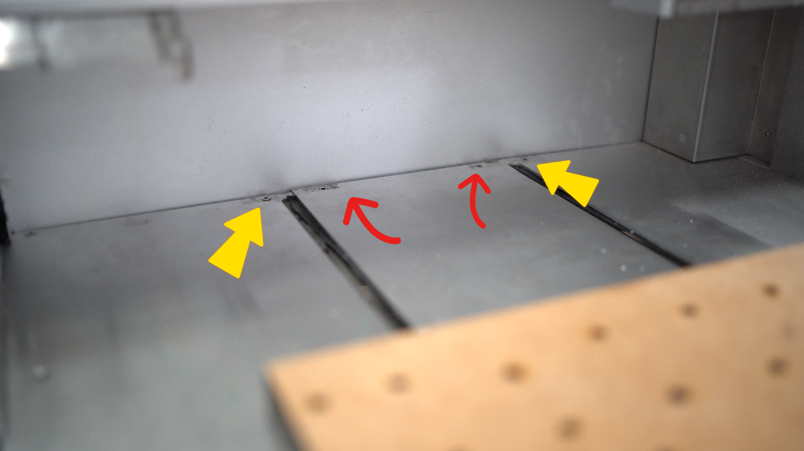
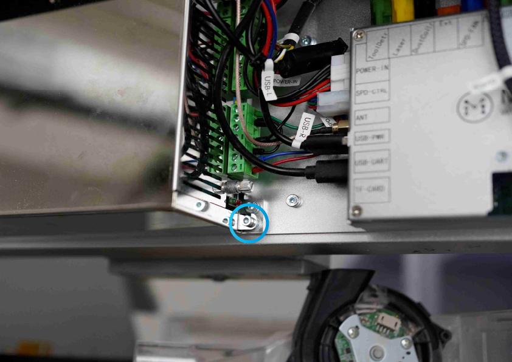
- On the top left is the power supply for the machine electronics (24v) and on the bottom is the spindle power supply (48v) and on the right is the spindle driver.
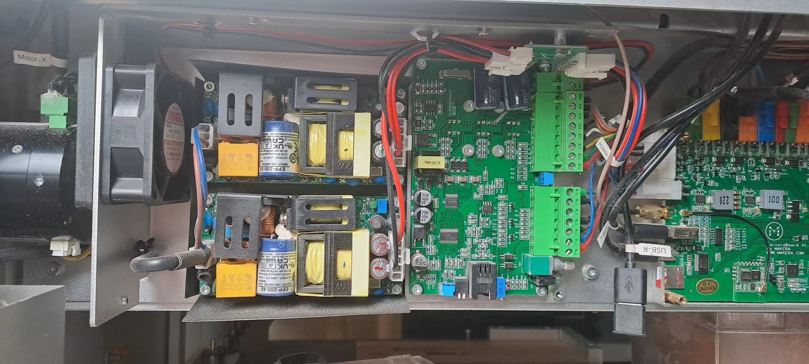
- Clean and check all connectors.
- Mount the cover back in position by reversing step 1.
Dust collection
- Remove the dustbin from inside the machine.
- Empty the dustbin and use a vacuum or compressed air to clean the filter.
- If the filter is still clogged excessively after a thorough cleaning. Replace the filter.
- Clean the back of the dust chamber.
- Loosen the below screws to take off the dust collection chamber.
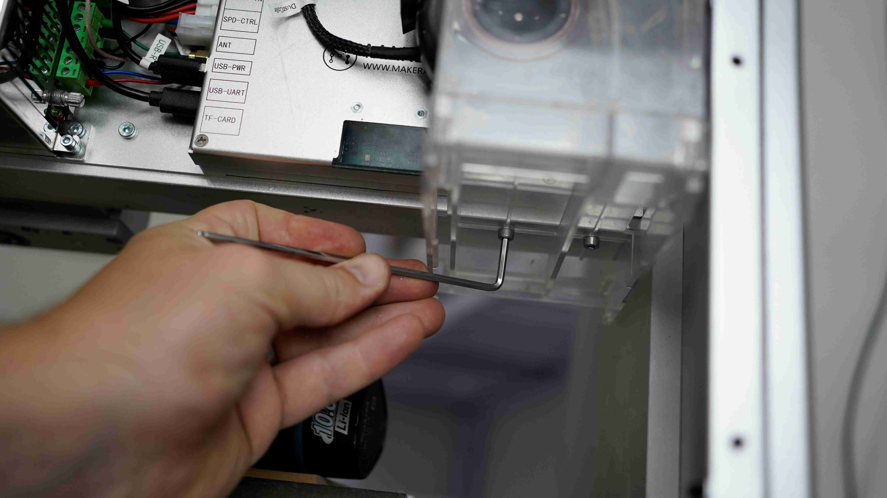
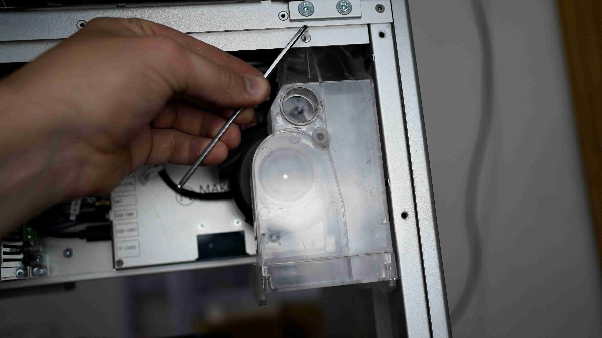
- Clean and check all connectors.
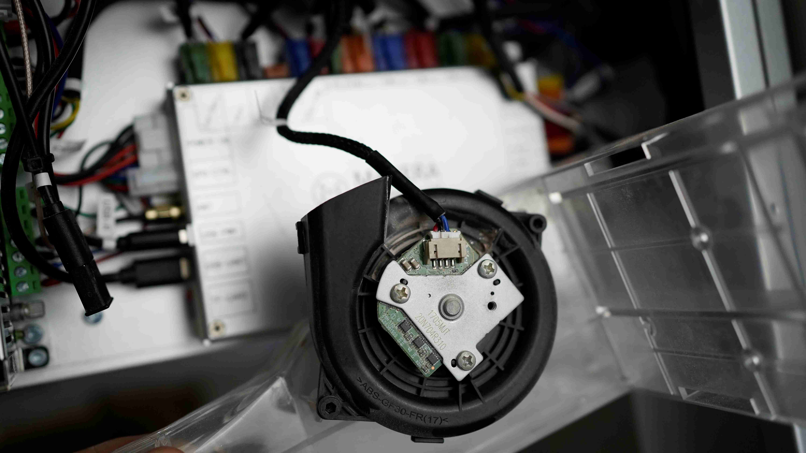
- Mount the chamber back in position by reversing step 1.
Machine bed
- Remove the machine MDF base by unscrewing the below screws.
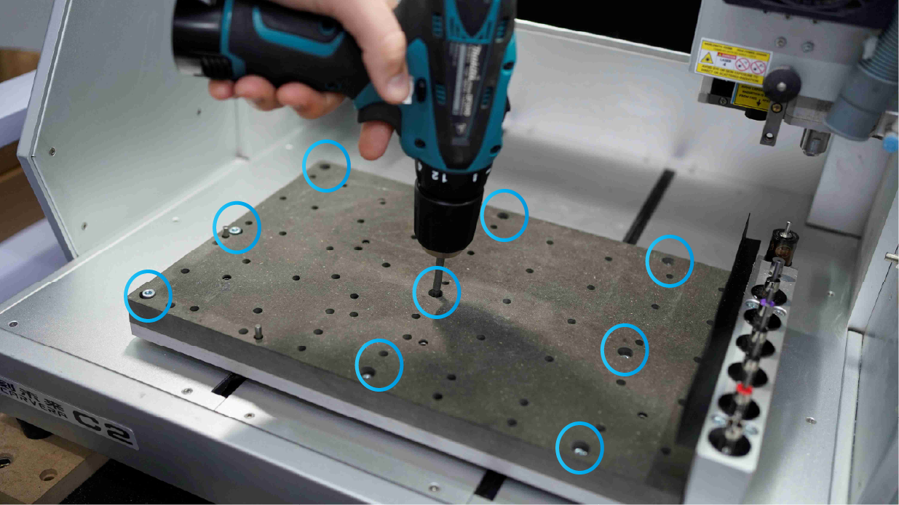
- Clean the inside of the bed with a vacuum or compressed air.
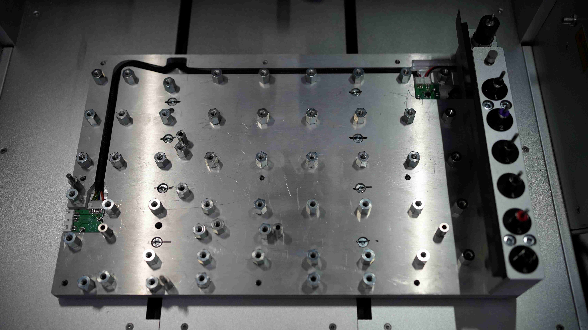
- Clean and check all connectors.
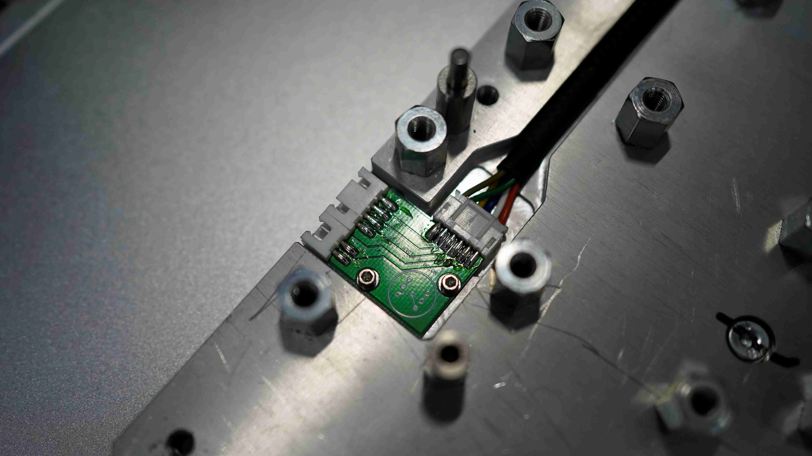
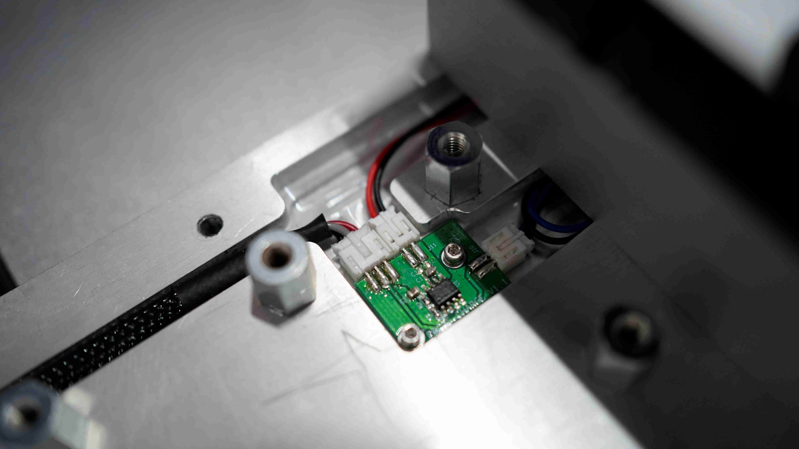
- Mount the MDF base back in position by reversing step 1.
Check for backlash
- You can manually test for backlash by trying to manually move and shake the X, Y, or Z axis when the machine is on.
- The axis should not be too loose or too tight. Refer to the "Backlash" topic in the troubleshooting section.
Calibration and Alignment
- Run the ATC test to see if all the tools pick up and drop successfully.
- (C:\Program Files (x86)\CarveraController\gcodes\Examples\Tests)
- Check that anchor point 1 is accurately positioned. Please refer to “ATC” in “troubleshooting.”
- Check that your ATC position is accurate. Please refer to “ATC” in “troubleshoot.”
Electrical Components
- While the back is open for maintenance check all other wiring and connections and look for any signs of damage or loose connections.
- A toothbrush works well to clear small connection areas and PCBs.
- If there is a problematic connection, please contact support.